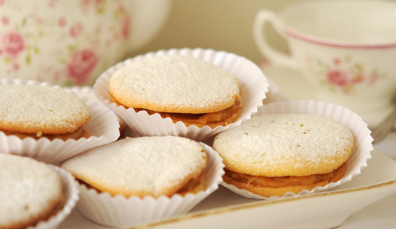

Empolvados

Description
Empolvados are traditional Chilean sweets from the central area of the country, they are characterized by their soft texture and pleasant flavor.
Ingredients
- 6 huevos, separar las claras de las yemas
- 120gr de azúcar flor
- 1 cucharadita de Esencia de Vainilla Gourmet
- 120gr de harina sin polvos de hornear
- 1 cucharadita de Polvos de Hornear Gourmet
- 1 tarro de manjar
- Azúcar flor para espolvorear
Steps
- Precalentar el horno a 180C.
- Batir las yemas hasta que hayan doblado su volumen. Añadir el azúcar flor y la Esencia de Vainilla Gourmet, seguir batiendo hasta que la mezcla espese.
- En otro bol, batir las claras a nieve. Incorporar las claras a la mezcla de yemas con movimientos envolventes.
- Cernir la harina junto a los Polvos de Hornear Gourmet y agregar con movimientos envolventes a la mezcla anterior (no batir solo incorporar).
- Forrar una lata de horno con papel mantequilla enmantequillado. Con la ayuda de una manga pastelera sin boquilla formar círculos de 5 cm de diámetro (dejar espacios entre cada tortita).
- Hornear las masitas por alrededor de 20 minutos, o hasta que estén cocidas pero sin que lleguen a dorarse. Despegarlas del papel cuando aún estén tibias y enfriar. Unir de a dos con manjar y espolvorear con azúcar flor.
Back